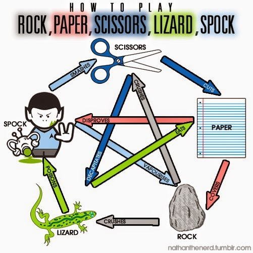

Dylan Walls
Front End Developer
Here are a few projects I have created while learning
I am also adding more as go! Be sure to come back and check up on it!
ATM Github
I created an App that acts as an Atm machine. It validates Entry Pin and able to get balance along with a withdraw function

RPSLS Github
Created a Rock Paper Scissor Lizard Spock Node.js app. You can either play as a Human with Computer or Computer Computer or even Human vs Human.